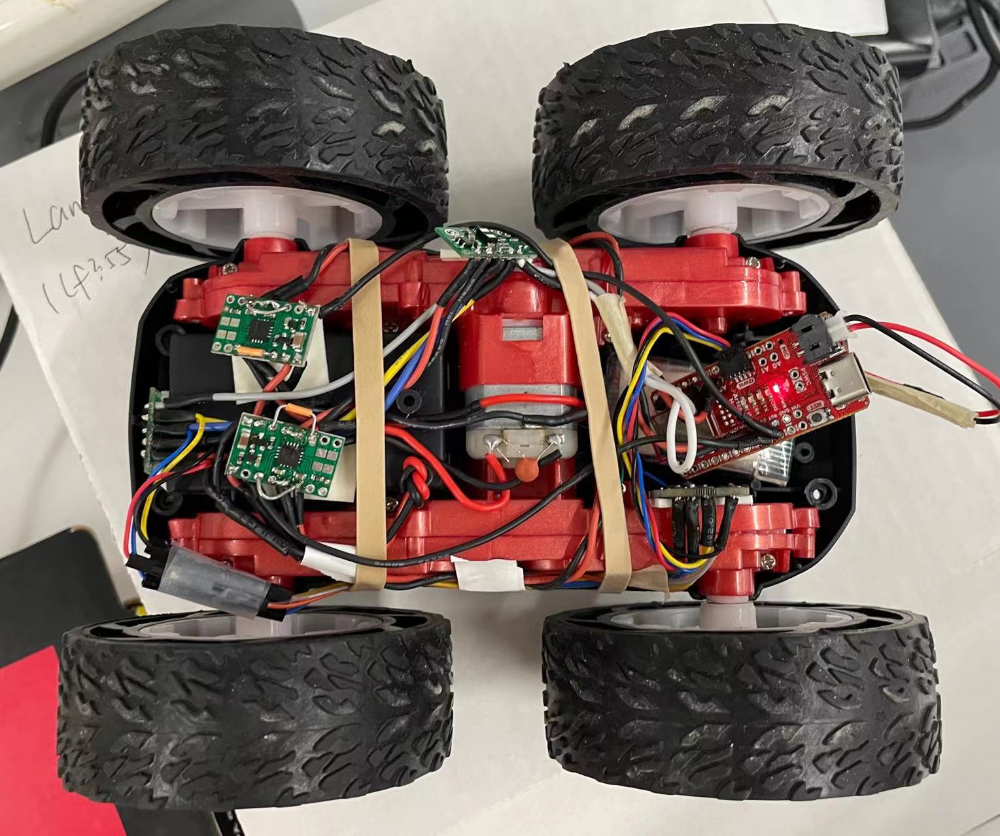

Parts Required
1 x R/C stunt car
1 x SparkFun RedBoard Artemis Nano
1 x USB cable
2 x Li-Ion 3.7V 400 mAh (or more) battery
2 x Dual motor driver
The Connection with Motor Driver
The operating voltage of the DRV8833 Dual Motor Driver ranges from 2.7V to 10.8V. It can diver 1.2A per channel continuously to a pair of DC motors.[1] In this lab, in order to make the motors more powerful, we paralleled the motor inputs and outputs to deliver 2.4 A continuous (4 A peak) to a single motor. The wire connection is shown in the following figure.

#define LeftFoward A16
#define LeftBackward A15
#define RightFoward A2
#define RightBackward A3
Motor Test
After a call to analogWrite(), the pin will generate a steady rectangular wave of the specified duty cycle until the next call[2].
The default resolution is 8 bits and we can change it to 1 bit or 16 bits by calling analogWriteResolution().
Here, I generated a 50% duty cycle PWM signal, shown in figure below, with 8-bit resolution to the A2 pin.

// right motor
analogWrite(RightFoward, 127);// 50% duty cycle w/ 8-bit resolution
delay(1000);
analogWrite(RightFoward, 0);// stop
delay(10);
analogWrite(RightBack, 127);
delay(1000);
analogWrite(RightBack, 0);
delay(10);
Install Every Thing inside the car chassis
After the successful motor tests, I connected the Qwicc Connection, together with 2 ToF sensors and an IMU sensor, to the Artemis. I put the two motor drivers on the battery box. One ToF sensor is placed at the front of the car, while another is at the right side. IMU is fixed to the side wall, whose y-axis points to the front.

Lower Limit
First, I tried three different analog values, 127, 63 and 31 when the resolution was 8 bits. The duty cycle were 50%, 25%, 12.5% respectively. As shown in the video, the left wheel can't turn when the analog value is 31.
According to my tests, the PWM lower limit of the right motor is 25, which is around 20% duty cycle. As for the left motor, it stops when the analog write value is lower than 42.
Calibration Factor
From the previous test, we can know that the right motor is more powerful. When the same analog values are set for the two motors, the right one will spin faster and the car will shift to the left instead of going straight. Therefore, a calibration factor is necessary. However, the spinning speed of the motor is nonlinear, which means the calibration factor will change with PWM value. As shown in the code, I added a calibration value to the the left motor's analog write value. In the case of 25% duty cycle, I found my car performed best when the factor is 18. I also tested when the analog value of the right motor is 200. In such a situation, the left motor should input 240 instead.
int leftMotorCalibrate;
leftMotorCalibrate=18;
analogWrite(LeftFoward, PWM+leftMotorCalibrate);
analogWrite(RightFoward, PWM);
In the video, we can see that the car is able to move in a straight line for 3 meters with little shift before hitting an obstacle.
Here is a portrait version.
Open Loop Control
In the demo below, the car will go forward and backward, turn right and left in the open-loop control.
Here are the analog values I set for the movements.
| Action | Left Motor | Right Motor | |
|---|---|---|---|
| Foward | LeftFoward: 63 * calibrate factor | RightFoward: 63 | |
| Backward | LeftBackward: 63 * calibrate factor | RightBackward: 63 | |
| Turn Right | LeftFoward: 127* calibrate factor | RightFoward: 63 | |
| Turn Left | LeftFoward: 63 * calibrate factor | RightFoward: 127 |
PWM Frequency
The default PWM frequency generated by the Artemis is 490 Hz[2], while the upper limit frequency for the motor driver is 50 kHz[1]. By manually configuring the timers to generate a faster PWM signal, we are able to make the motor spin faster.
Speed Range
I wrote a program that ramps down in speed. In one loop, analog values for the motors are from 240 t0 0 with interval 20. Each speed stays for one second. Distances are gotten from the ToF sensor and the time during measurements are stored in arrays. Once a single loop ends, those values will send to my laptop through Bluetooth. My code is attached below.
while (central.connected()) {
for(int i = 0;i < 11; i++){
// get distance and time
distanceSensor1.startRanging(); // Write configuration bytes to initiate measurement
distances[i] = distanceSensor1.getDistance(); // Get the result of the measurement from the sensor
time_record[i]=millis(); // Get current time
distanceSensor1.clearInterrupt();
distanceSensor1.stopRanging();
// change motor speed
analogWrite(LeftFoward, PWM_Left[i]);
analogWrite(RightFoward, PWM_Right[i]);
delay(1000);
}
analogWrite(LeftFoward, 0);
analogWrite(RightFoward, 0);
delay(100);
write_distance_time();
delay(1000*10);
}
int leftMotorCalibrate;
leftMotorCalibrate=40;
analogWrite(LeftFoward, 200+leftMotorCalibrate);
analogWrite(RightFoward, 200);
if (currentMillis - previousMillis > interval) {
stop();
write_distance_time();
delay(10*1000);
previousMillis = millis();
}
else{
get_distance_time();
}
According to my tests, the highest speed is around 5.69 m/s.
References
[1]DRV8833 Dual Motor Driver Documentation.
[2]Arduino Function: analogWrite()